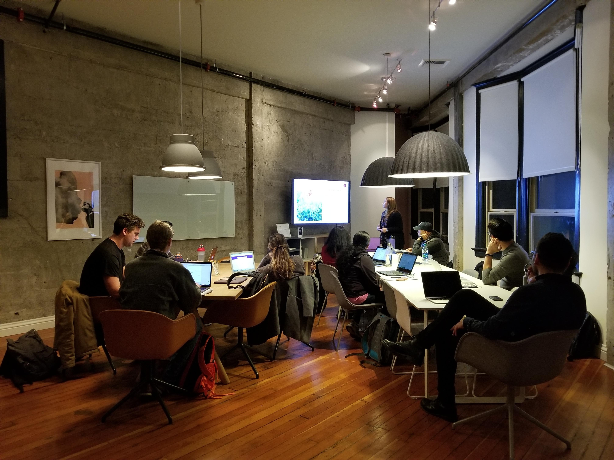

About Us

T.I.T.A is a scalable I.T firm that runs with the vision of providing exceptional, quality and professional services to you. It is one whose services cuts across major areas in tech industry like Web development, Cyber security, Game Development, Animation and more. We also have dreams of teaching people the true value of technology and helping them understand that IT is the future. Fueled by this desire, we created a mentorship program to enable us educate people on areas of IT.
Free Mentorship Programme
Sign up for our mentorship programme and you have a chance to become a part of TITA. The good news is you don’t need to have had any prior knowledge in tech. We are willing to teach you from scratch. It’s great, isn’t it? We will equip you with the latest technologies and skills in Web development, Cyber Security and Game development.
To join this programme, indicate interest in the comment section and let us know why you want to be part of this programme.
- You must be within Benin, Edo state, Nigeria to qualify for this programme.
- Having a laptop will be required.
- You must have a strong passion for tech.
- Determination to learn is a requisite.
- It’s a 3 months learning program with COMPULSORY9 months on-the-job training.